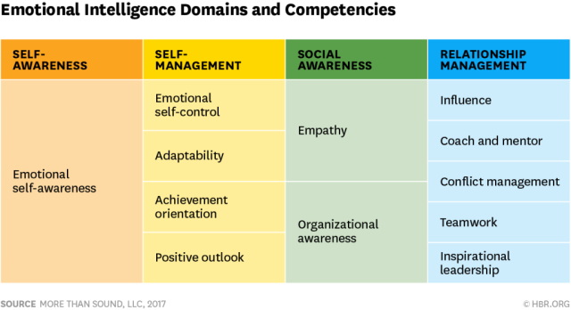
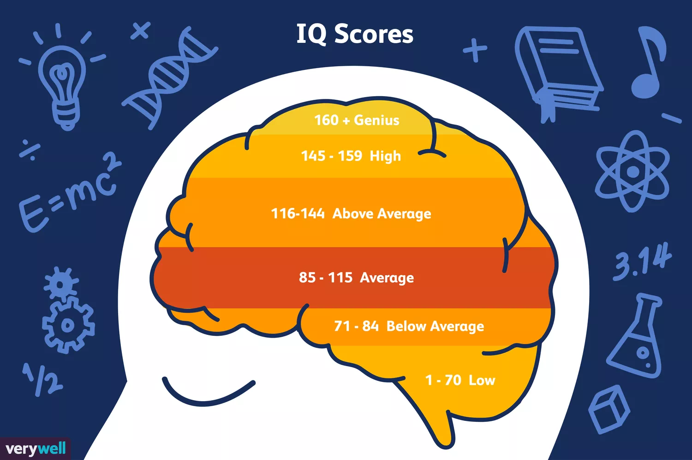
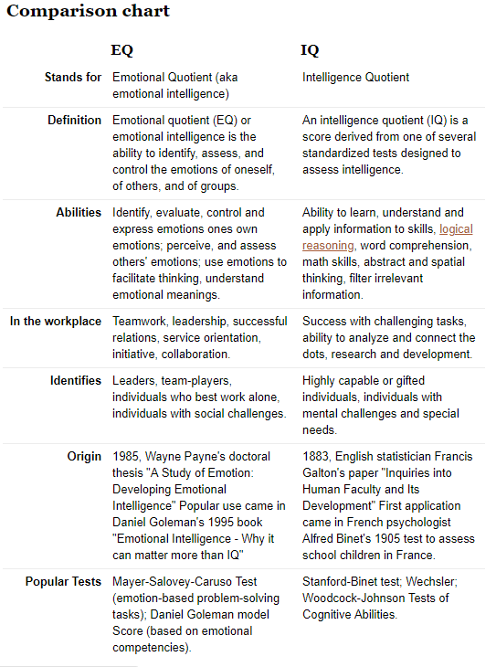

What is EQ?
Key Attributes of Emotional intelligence
Emotional Quotient (EQ or EIQ) or commonly known as Emotional Intelligence, is the ability to control ones emotions in a positive way. The 4 main attributes relating to this are:
Mastering each of these will bring you success in all areas of your life. Be it; family, work, friendships, and/or personal health.
What is IQ?
IQ Scale
Intelligence Quotient (IQ) is a measure of a persons ability to think logically. Examples of these are problem-solving skills or how well they understand and communicate complex ideas. The measurement is in the form of a number, this is calculated from taking special IQ exams done by trained professionals.
A high IQ score does not always mean that a person will have a successful life. Nor does a low IQ score determine a persons lack of success. It is just a show of how certain individuals handle mental challenges.
How do they relate to me?
Main Differences between IQ and EQ
Here we can see that the main difference between the two is that IQ is based on the individual and their own mental environments, where EQ is based not only on the individual, but the environment that surrounds them.
Having a balance of both Intelligences will give the individual a set of skills that will improve the health of themselves and the relationships they hold.
I will be practicing a lot of techniques relating to EQ. I struggled a lot with taking care of myself and putting people ahead of me. I am now developing at an exponential rate and will continue on this path. I will strive to be the best version of myself and will appreciate all the support that comes my way.